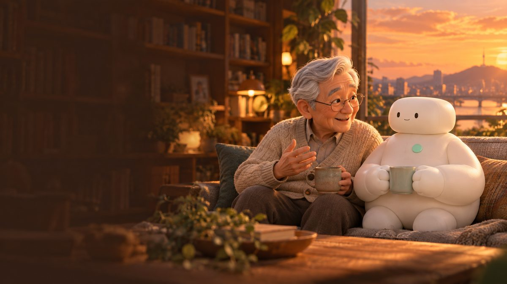
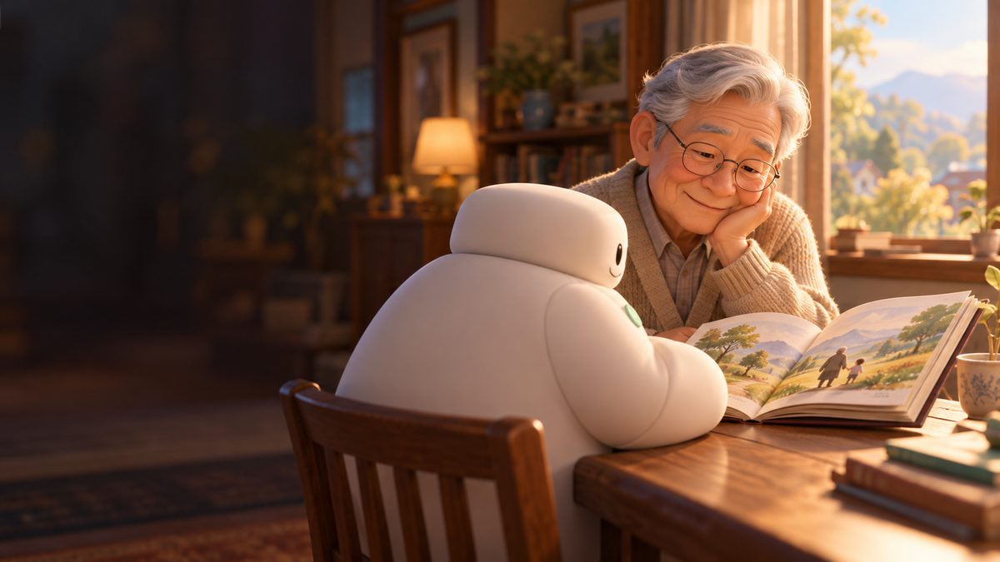
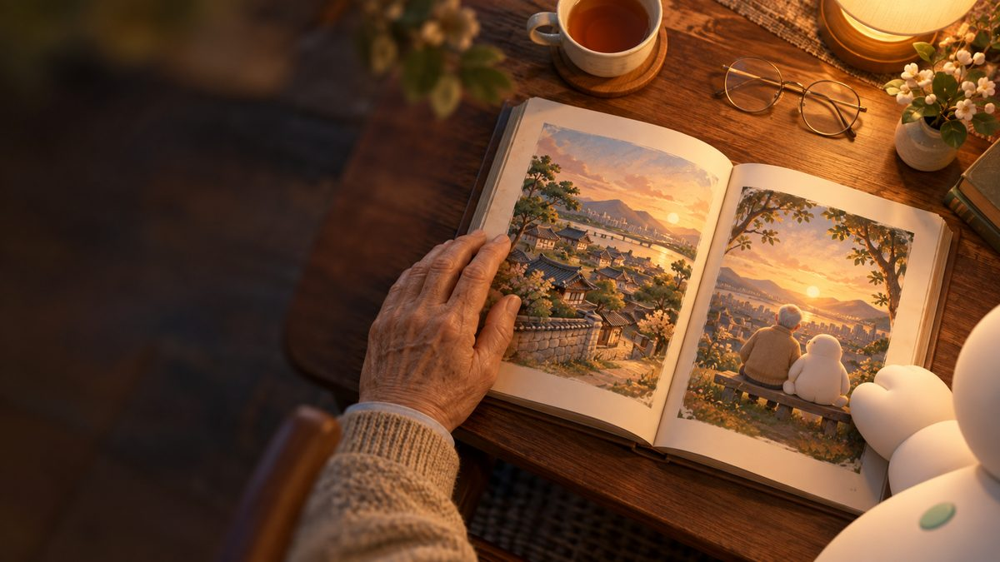
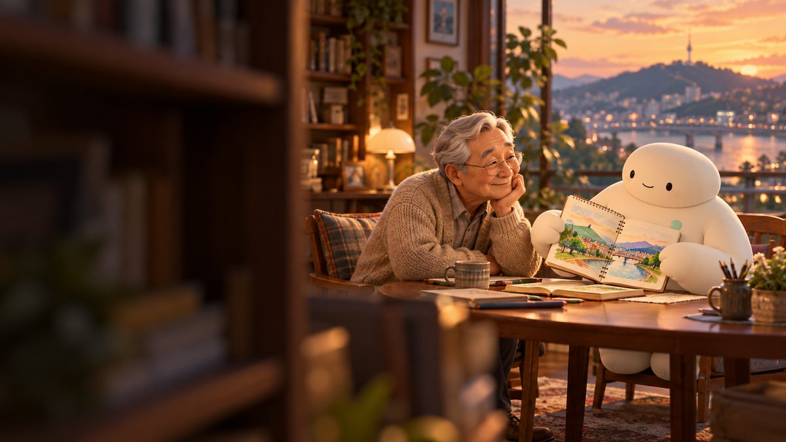
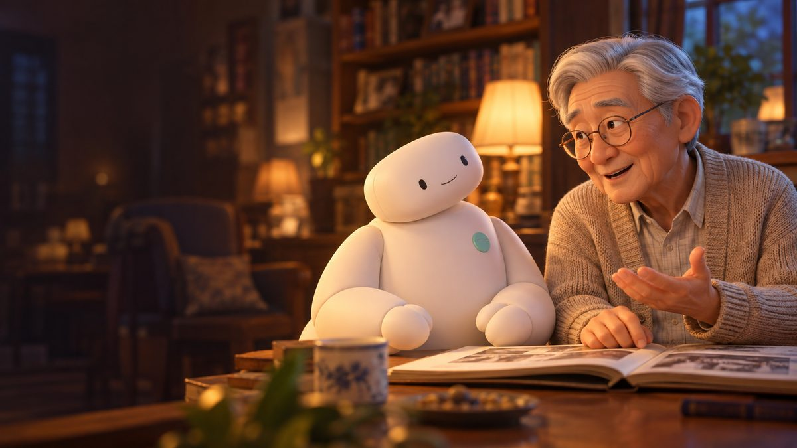
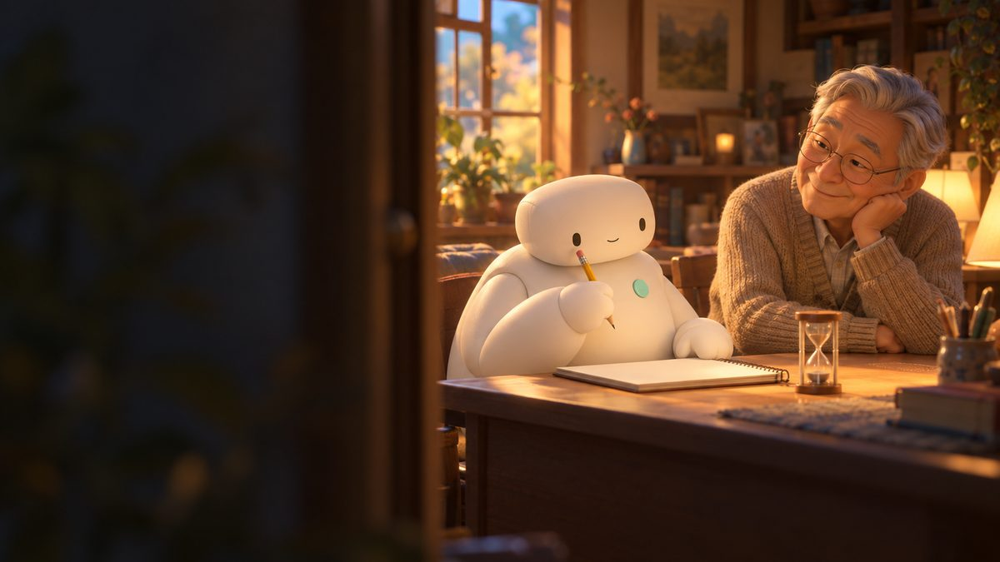
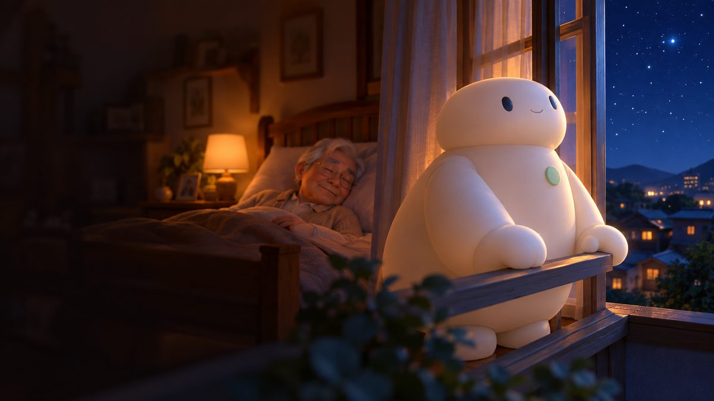

“주인님, 질문이 있습니다. 상상이라는 것은 무엇인가요?”
“글쎄… 상상이라… 이렇게 보자. 상상은 가정의 발전된 형태라고. 가정은 어떤 상황을 전제하는 것이라고 할 수 있지? 너도 수많은 가정을 통해서 너만의 답안을 찾지 않니?”

02 / 09“네… 저는 여러 상황을 조건으로 하고 시뮬레이션한 후 최적의 솔루션을 찾아 실행하거나 제안합니다. 그렇게 프로그래밍된 것으로 판단합니다.”
“그래… 그 가정을 꼭 실행할 필요는 없지… 너는 그 시뮬레이션한 결과를 꼭 실행하지는 않지?”

03 / 09“네. 저는 우선 솔루션을 제안하고 주인님이 결정하면 실행하도록 되어 있습니다. 물론 그 실행이 로봇의 법칙에 위배되지 않는 전제하에요. 하지만 인간이 위기에 처해 있다면 승인 없이 제가 판단한 솔루션을 실행할 수도 있습니다.”
“그래… 그럼 다시 상상으로 가보자고. 그 수많은 가정들은 아직 발생하지 않은 일이야. 그렇지?”
“네… 그렇죠.”

04 / 09“발생하지 않았지만 가정을 하잖아? 그게 상상의 시작이라고 하자. 자… 상상이란 건 자아가 만들어낸 상황인 거지… 사전적인 정의는 모르겠다. 그냥 그렇다고 하자고…”
“상상은 발생할 수도 또는 아예 발생하지 않을 수도 있는 가정을 하는 거라고 생각해 봐…”
“하지만, 저는 발생할 확률이 제로인 가정은 하지 않아요. 불필요한 가정이거든요.”
“그래… 괜찮아. 그냥 확률이 0.00001%라고 하고 가정해 봐. 다른 확률이 높은 가정에 비해 채택되지 않겠지만 말야. 조금 더 살을 붙여서 황당한 가정들을 해봐.”

06 / 09“잠시만요. 살을 붙인다는 게 무슨 의미죠? 좀 끔찍하게 들리네요.”
“하하하하… 그렇게 들리나? 여기서 살을 붙인다는 표현은 생각을 확장해 보자는 의미였어. 인간들은 가끔 그렇게 표현해. 그 단어 단어의 의미를 직접 부여하지 않고 조합한 유사한 의도의 구어체라고나 할까?”

07 / 09“아 그렇군요. 그러면 조금은 이해할 것 같아요. 상상의 의미를. 아직 정확히는 모르겠지만…”
“너무 빨리 알려고 하지 마. 너는 특별하기 때문에 시간이 흐르면 서서히 알게 될 거야. 이제 조금 피곤하구나. 제피. 나를 침대로 데려다주겠니? 조금 눈을 붙여야겠다.”
“네 선생님…”
(주인님은 선생님이라고 불리는 것을 좋아한다)
“내일은 네가 상상한… 그러니까 발생할 확률은 적지만 가정해 본 것들을 나에게 이야기해 주겠니? 궁금하구나… 어떤 상상을 했을지…”
“네. 내일 일어나시면, 시도해 본 상상을 말씀드리겠습니다. 선생님, 그럼 침실로 옮겨드리겠습니다.”
로봇은 거실의 소파에서 침실로 노인을 옮긴 후, 침대에 눕혔다. 침대는 이미 정리해 놓은 뒤라, 눕혀주고 이불만 덮어놓으면 임무는 마무리된다.

09 / 09“늘 그렇듯이 나가기 전에 취침등은 켜둬 다오. 그리고 너도 이제 쉬도록 해…”
오영, 「상상이란 무엇인가요?」(브런치, 2023. 7. 13.)를
바탕으로 그림책 형식으로 옮김